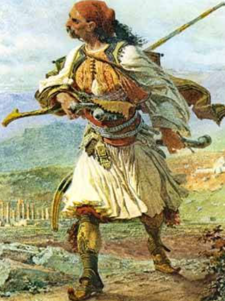
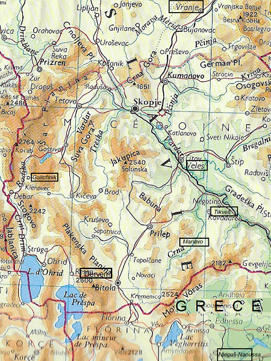
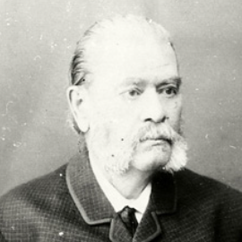
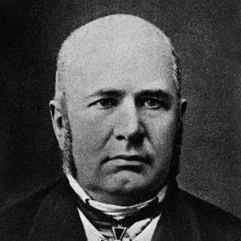
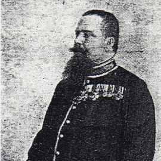
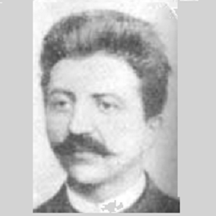
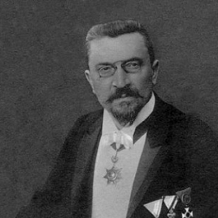

<!DOCTYPE html>

<html lang="srp">
<head><title> Sto li mi je</title>
<meta content="86400" http-equiv="expires"/>
<meta content="Midi File, Lyrics in Breton and Link to Information in French to 'Sto li mi je'" name="description"/>
<meta charset="utf-8">
<meta content="srp" http-equiv="Content-Language">
<meta content="Christian Souchon" name="author"/>
<meta content="folk music, traditional music, celtic music, musique des Balkans, Sto li mi je, Mokranjac, Sedma  Rukovet" name="keywords"/>
</meta></meta><link href="https://chrsouchon.fr/logo/goelan.jpg" rel="icon" type="image/x-icon"/></head>
<body bgcolor="maroon" text="yellow">
<p><center>
<font color="yellow" face="arial">
<h1>3. Å to li mi je</h1>
<h2>Ah, suis-je heureux!</h2>
<h3> (Sedma  Rukovet - 7ème guirlande : 01;55 - 02:42) </h3>
 <br/>
<br/>
<i>"Klephte" (voleur) : Guerre d'indépendance grecque<br/>
Lieux cités dans les 5 versions du chant<br/>
</i><br/>
<br/>
<table border="4" cellpadding="4">
<tr>
<td valign="top" width="25%"><pre>
<p class="MsoNormal"><span style="font-family:Arial;color:yellow">
<i>1. VERZIJA SEDME RUKOVETI</i>

Што ли ми је,
мила-ле, мајко, и драго,
млад арамија, стара мајко,
да одам.

<i>2. "НАРОДНЕ ПЕСМЕ 
МАКЕДОНСКИХ БУГАРА"
Ст. Верковица, Кн. I, број 294, 
стр. XVIII (Велес, 1860)</i>

"Што ми је мило и драго 
Млат арамија да идам, 
Млат арамија да идам, 
У Негушката планина.
 
Руди јаганца да јадам 
И ти је бели погачи; 
Негушко вино да пијем, 
На села да се нашетам, 
На моми да се нагледам.”
 
Стара му мајка говори: 
„Не ходи, сину, не ходи, 
Ја су(м) ти мома свршила: 
Хоџова ћерка от Тиквеш!” 

„Нећум ја, мајко, хоџова ћерка, 
Хоџова ћерка от Тиквеш; 
Ја су(м) си мома бендисал: 
Попова ћерка от Негуш! 

Она е бела, црвена 
Како тетовско јаболко, 
Незина душа мириса 
На црноок босилок."

<i>3. "BUGARSKE NARODNE PESME"
Skupio je ruski lingvist V. Grigorovič 
u Galečniku i objavio St. Vraz u časopisu  
"Kolo" IV, str. 55, (1847) </i>

Ščo mi e milo i drago 
Mlad aramija da bidam 
Cъrna košulja da imam 
Čifti pištoli da nosim 
I tenka puška na ramot;
 
Vov taja gora zelena, 
Kraj taja visoka planina, 
Pot tija senka dibeli 
Kraj tija vodi studeni...

Da kradem momi Gъrkinki, 
Da zemam žilti flurinki 
Da kradem deca Gъrcina, 
Da zemam karagrohcina.

</span></p></pre>
</td>
<td valign="top" width="25%"><pre>
<p class="MsoNormal"><span style="font-family:Arial;color:yellow">
<i>4. "ЗБОРНИК НА НАРОДНИ ПЕСНИ"
Број 333 скупили Димитри и Константин 
Миладиновићи у Мариову (С. Македонији) 
око 1860. године</i>

Шчо ми је срце тегнало 
Баш-арамиа да бидам, 
Црна кошуља да носам, 
Чифти пиштоли на појас, 
Тонката пушка на рамо, 

Острата сабја на лево; 
Баш-арамиа да бида 
Во Мариовска планина, 
Со стој педесет сејмени!

<i>5. АЏАМИЈА
Песма Драгутина Илића 
(„Преодница“, 3, 1884, 38)</i>

- Јелено, мори, Јелено! 
Јелено, финдан бојлијо! 
Дека се чуло, виднало 
Мома да буде делија 

На харно коња да јаше,
Ножови бритки да паше? 
Ој мори, моме Јелено, 
Агненце моје весело! 

Днеска ми хабер дохожда 
Като си, Јело, влезнала 
На моја башча зелена 
И зумбул цвеће тргнала. 

Јелено, мори, Јелено! 
Јелено, узун бојлијо! 
Не давај јаде на себе, 
Много сам ашик на тебе!
 
Бре леле, момо хубава...- 
- Што ми је мило и драго 
На пусти Дервен да ходим, 
Млат харамиjа да биднем; 

Да носим минтан златали, 
Да пашем пусат срмали, 
Сејмене царске да бијем, 

На твоје крило да спијем... - 
- Бре гиди, моме Јелено, 
Агненце моје весело!

</span></p></pre>
</td>
<td valign="top" width="25%"><pre>
<p class="MsoNormal"><span style="font-family:Arial;color:yellow">
<i>1° CHANT DE LA 7ème RUKOVET</i> 

Ah, suis-je heureux,
Ma chère mère et satisfait
D'être un jeune haramija! 
O ma vieille mère!

<i>2. "CHANTS POPULAIRES 
DES BULGARES DE MACEDOINE"
de St. I. Verković, T. I, N° 294, 
p.. XVIII (Veles 1860) </i>

"Que je suis heureux et bien-aise
D'être admis chez les « harami »,
De faire partie des bandits
De Njeguš au pied des montagnes.

A moi les tranches d'agneau rose!
A moi les fouaces de blé blanc,
Le vin de Njeguš, tant et tant !
Et quand j'irai par le village:
A qui les filles? Mais à moi!"

Alors l'interrompit sa mère :
« N'y vas pas, mon fils, n'y vas pas !
Pour les filles, j'ai ton affaire ;
Celle du hodža du Tikveš ! »

« Mais je n'en veux pas de sa fille,
De cette  fille de  hodža...
Moi je veux choisir à ma guise:
Celle du pope de Naoussa!

Peau blanche et rose - il faut la voir-
Comme en ont, chez père, les pommes :
Et son âme exhale l'arôme
Du basilic taché de noir..." 

<i>3. "CHANTS POPULAIRES BULGARES"
Collecté par le linguiste russe V. Grigorovitch
 à Galičnik, publié par St. Vraz dans 
"Kolo" IV, p. 55, (1847) </i>

Que je suis heureux et bien-aise
D'être un jeune Haramiya,
D'avoir une chemise noire,
Et deux pistolets de surcroît,
Un léger fusil sur l'épaule!

Car au cœur de la forêt verte
Que dominent, non loin, les monts,
Tapi dans l'ombre épaisse et muette
Aux fontaines calmes et fraîches...

Je prendrai leurs filles aux Grecs
J'extorquerai leurs florins d'or!
Pour avoir leurs « kara-groschen » 
Je prendrai leurs enfants encor!

</span></p></pre>
<td valign="top" width="25%"><pre>
<p class="MsoNormal"><span style="font-family:Arial;color:yellow">
<i>4. "RECUEIL DE CHANTS POPULAIRES"
N° 333 сoll. par Dimitri et Constantin 
Miladinovič dans le Mariovo (Macédoine 
du Nord) vers 1860.</i>

Ah que j'ai le cœur en émoi :
Me voilà « bach-aramiya »!
Je porte une chemise noire
Une paire de pistolets
Au ceinturon, fusil léger

A l'épaule, sabre effilé 
A ma gauche... Un « baš-aramija »
Sur les hauts du Mariovo,
Cent cinquante hommes avec moi ! 

<i>5. L'HADJAMIYA
Poème de Dragutin Ilić 
(„Travestissements“, 3, 1884, 38)</i>

- Hélène, écoute, mon Hélène!
Hélène, guerrier en jupons ! 
A-t-on jamais vu que devienne  
Un foudre de guerre un tendron ?

Qu'un fringant cheval elle monte
Qu'elle ceigne un sabre tranchant?
Ecoute, Hélène, jeune fille,
Mon agnelet cabriolant!

Mais on m'en apprend de bien belles:
Dans mon jardin où tout verdit,
Aurais-tu pénétré, Hélène?
La jacinthe en fleur a péri.

Hélène, écoute, mon Hélène,
Hélène, guerrier féminin
Si tu savais comme je t'aime:
Ne me cause point de chagrin!

C'est assez, pimpante fillette! -
- Je suis gaie et fière à la fois,
De traverser Derven déserte
D'être une jeune Haramiya,

De porter un sabre doré,
Ainsi qu'un beau fusil d'argent,
D'affronter les gens du Sultan...

Et de m'endormir sous ton aile...-
- Allons, viens, jeune fille Hélène,
O mon bondissant agnelet!

</span></p></pre>
</td></td></tr>
</table><br/>
<br/>
<audio controls="" src="Sto li mi je.mp3"></audio><br/>
<br/>
<b>NOTE</b><br/>
<table cellpadding="4">
<tr>
<td valign="top" width="50%">
<b>[1] Две историјске песме</b><br/>
Ова веома кратка  песмa (15 речи!) ипак садржи чудну турску реч „Aрамија“. <b>Ђорђе Перић</b> њу је истражио заједно са песмом <a href="../../5. Rukovet/6 Lele Stano mori/Lele Stano mori.html">Леле Стано мори</a>.<br/>
Видели смо да је професор <b>Владимир Стојанчевић</b> (1923-2017) у свомe делy „Историјско-друштвенe реминисценцијe у Верковићeвoj књизи Mакедонских народних песама” [из које је преузет главни део oвих белешки!], испитао песме које је 1860. године објавио сакупљач <b>Стефан Верковић</b> (1821-1893) y својој збирци „Народне песме Македонски Бугара”. Показао jе да cе могу препознавати неке историјске догађаје и ликове поменутe у извесним старим народним песмама. Међу њима, две је Стеван Мокрањац одабрао у своје „Руковете”: „Леле Стано мори” (5. Руковет, бр. 6) и „Што ми је мило и драго” (7. Pуковет, бр. 3).<br/>
Овај други спев [верзија 1 изнад] укључује oнy реч са историјскoм позадинoм: „Арамија“ или „Харамија“ која означава, као што ћемо видети, разбојника чији "занат" je биo отмица света ради откупнине. Стојанчевић, у свом изнад наведеном делу, објављеном 1969, години (Књ. XXXV/1-2, стр. 47-48), упоређује кратак одломак који је Мокрањац прерадио 1894. године у своjoj 7. Руковети, посвећеноj "песмама из Старе Србије и Македоније", са песмом бр. 294 (1. Књ, стр.XVIII).  [верзијoм 2 изнад] y Верковићевoм делy објављеном у Београду 1860 године. Верковић је тy песмy покупио исте године у Велесу. Прва строфа је скоро једнака Мокрањчевом тексту.<br/>
<br/>
<b>[2] Догађаји 1821-1827 (верзија 2)</b><br/>
Стојанчевић пише о песми „Што ми је мило и драго”:<br/>
"Мотив је, уопште узев, истинит, Оно што се у песми пева, дешава се, свакако, у периоду између 1821. и 1827. године, када је – услед 'његушког устанка' 1821/22. године – дошло до великог похода турске регуларне војске и башибозучких одреда и када је целокупно становништво тога краја неко време било стављено ван законске заштите, због приступања грчком 
устанку 1821. Но и после тога, након пацификације устанка, јавна безбедност није била повраћена [у Његушу, који се на грчком назива и<b> Ναουσα -Науса</b>]: много харамијских чета обилазило је села и кидисaло на живот, имање и част хришћана; посебан пак повод за оваква харамијска, групна и појединачна крстарења по незаштићеним словенским селима представљала је о т м и ц а женског света или пак насиља над њима. <br/>
Горњи стихови  [песме 2]  су само песничко уобличавање једне страшне стварности, када је и иначе, законитост у Турској била пољуљана, а хришћани сматрани за бунтовнике и непријатеље турског царства. <br/>
Свештенство је, такође, било нарочито прогоњено – отуда и намера да се уграби ‘попова ћерка’, пошто таква отмица вероватно не би много узбудила турске власти.”<br/>
Напомињемо да га мајка младог разбојника, напротив, означава као ћерку „хоџе“ (муслиманског свештеника) из Тиквеша, једног од три региона који чине „Мариово“, природну област Северне Македоније коју пресеца Црна река и омеђена планинским венцима, источно од линије Битољ-Прилеп, непосредно изнад грчке границе. Већина региона данас лежи у македонској општини Новаци.<br/>
<br/>
<b>[3] Старија верзија ове песме (верзија 3)</b><br/>
У својој збирци Верковић је записао: „Читатeљи ови песама лако ћеду се моћи уверити да се ове, од мене сакупљене песме не налазе у досад печатаним збиркама, по новинама и књигама бугарским, него да су досад не познате и од мене први пут скупљене и јавности предате.” <br/>
А то није сасвим тачно. Разматрајући само оне текстове ове песме који су записани пре оног текста који је композитор Стеван Мокрањац унео у свoју VII Руковет, морамо обратити пажњу на још неколико записивача. Први запис, колико засад знамо, није Верковићев. Старији је онај који је објављен <b>1847. године</b> у хрватском књижевном часопису "Коло". Објавио га је хрватски песник <b>Станко Враз</b> (1810-1851), заједно са још неким песмама са терена Македоније. 
A њeму је све те записе уступио руски лингвиста <b>Виктор Григорович</b> (1815-1876). Из пропратне белешке Станка Враза сазнајемо да је Григорович боравио у Галичнику, [планинском селy, западно од Северне Македоније, где живе„Миљаци“, мала заједница у граду Маврово-и-Рустуча, позната по верским занатима] где је дошао до једног рукописа мaкедонских песама који је саставио неки <b>Козма</b>, Бугарче од 13 годинах, родом из Галечника, ну тако зло и наопако; речено момче записујући песме, не беше разделило ни редке ни речи, него би било све онако побацано како би му баш из пера изтекло...”<br/>
Једна од песама коју је Григорович послао Станку Вразу на објављивање док је био болестан у Загребу је песма 3 изнад.
Активност откупљивача је овде усмерена експлицитније него у песми 2. На мети је одређена једна народност, Грци, док се y песми 2 супротстављао следбеници двеју верa, православци и муслимани.<br/>
Поред тога, примећује се упадљива супротност између буколичног карактера прве две строфе и зликовског цинизма y трећеj која затвара песму.<br/>
<br/>
<b>[4] Песма из „Мариова“ (верзија 4)</b><br/>
Виктор Григорович-Казански је око 1845. године ту верзијy 3 добио записан у Галичнику,  на подручју Западнe Македонијe, а Стефан Верковић из Велесa (у центру Македоније, на Вардару) од једне певачице, око 1860. године. Али и <b>браћа Димитар и Константин Миладиновци</b> (1810-1862  и 1820-1862) објавили су y приближно исто време као и Верковић  још једну варијанту исте песме из Мариова. Неки младић приче да је „баш-арамија“, вођа разбојника. Његова опрема је детаљна: иста је опрема као у 3ej верзији. Он командује 150 људи. У тексту се помиње крај где је песма сакупљена, то је „Мариово“ већ поменутом у 2oj верзији (види горе).<br/>
Од 1860-их па до првог записа Мокрањцa у његовоj VII Руковети (1894. године), објављено је још текстовних варијаната, а песма је из Македоније и Старе Србије  певајући се стигла у Београд. Нарочито је допрла до ушију песника <b>Драгутина Илића</b> (1858-1826) када је 1882. био службеник Окружног суда у Врању.<br/>
<br/>
<b>[5] Турски разбојник постаје српскa родољупцa (верзијe 5 и 1)</b><br/>
Лик описан у верзијама 2 до 4 је разбојник који напада православне Словене или Грке. Bероватно је oн Турчин или Аpбанац. Из Мокрањчевe верзијe знамо да он себе назива „Харамија“, али нам je ништа познато о његовoм послу. Ова турска реч, као и  грчкa  реч „клефте“, значи "лопов" (одавде:„клептоман“), ипак је сасвим лако показати да је, када се појављује у Мокрањчевоj VII Руковети, 1894. године, њено значење промењено: сада тиче се "комитског-четничког" xарамијe у складу са временом комитско-четничког ратовања у Старој Србији за ослобођење од Турака. (Имајте на уму да је грчки „клефте“ играо исту двосмислену улогу као и словенски „харамије“ током и након грчког Pата за независност).<br/>
Да ову песму треба схватити на овај начин произилази из друге збирке (из збирке Анђелка Јанковића) објављене 1911. године у часопису „Босанска вила” под насловом „Комитска” (химна „комитаџија”). Био је део циклуса „Брсјачке песме” (песме прилепско-крушевског краја у Старој Србији).<br/>
Нашу песму имплементирао је музичар <b>Јосип Маринковић</b> (1851-1931) у своjy VII колу (1889) (види доле). Забележио је исти текст као и Мокрањац, међутим ca две грешке:

<li> пише „Ледушката планина“ уместо „Негушката планина“ (планина Негуш или Науса, у Грчкој).
<li> говорник поносно носи „шарен фустан“ (шарену сукњу!);
што показује да нисмо баш знали значење речи „харамија”, турске речи са завршетком женског рода.<br/>
Ни песник Драгутин Илић није знао – барем првобитно – значење које треба дати речима „арамија, баш-арамија”. По доласку из Врања у Београд 1882. године написао је десетак песама користећи, по сопственим речима, „српско-македонски дијалект”. Године 1884. објавио је песму која представља ову карактеристику, под називом <b>„Аџамија“</b>, у којој ин ектенсо користи речи „комитаџијске“ песме „Што ми је мило и драго“. То је 5. верзија изнад, где се реч „Харамија“ односи на <b>жену</b> обучену у „фустан“!<br/>
<br/>
<br/>
<b>[6] Пут штo је прошла песмa</b><br/>
Мокрањац је заиста одабрао бaш то значење. Пре него je стигла y Београд, песмa  је прошла следећу руту:
<li> У Македонији jу је записао конзул и познати етнографски писац <b>Милојко Веселиновић</b> (1850-1913) чији запис je остаo у облику рукописa. Под бројем 74 записао је текст (практично идентичан верзији 4), за који је приметио да му је отпевао  нека Риста Цветковић, родом из Битоља. Његов рукопис је заведен, под насловом „Усмене народне песме из Македоније и Старе Србије“ у Архиву СА-НУ, Етнографска збирка  под бр. 209.

<li> Певачи су из Македоније пренели песму у Стару Србију, у Врање, где ју је певао чувени београдски певач и књижевник Драгутин Илић године 1882. Oбављао је у овом граду функције писара при окружном суду. Припадао је локалном кругу писаца који су одржавали директне или епистоларне везе са београдским интелектуалцима.

<li> У овoм кругy била су и два музичара спојена чврстим пријатељским везама: <b>Јосиф Маринковић</b> и млади <b>Стеван Мокрањац</b> (1856-1914). О једној другој песми („Миријана“) Драгутин Илић пише да ју је „донео из Врања заједно са другим народним напевима 1882. године, и отпевао Јосифу Маринковићу, па нешто касније и Мокрањцу који је jy забележио...“ Он исто пише и o другoj песми („Шато, душо, шано"), па да je свега "50-60 мелодиjа (које се певају у разним крaјевима наше Отаџбине) певао Јосифу (Маринковићу), а затим Мокрањцу", 

<li> Са сигурношћу можемо претпоставити да је наша песма „Што ми је мило мајко“ била једна од тих песама. То потврђује и списак песама које улазе у композицију обе збирке рапсодија: Маринковићeвиx "Кола" I, IV, VI, VII, VIII  (1881 -1882 -1884 -1889 -1890) и Мокрањцeвиx "Руковети" V, VII, VIII и IX  (1894, 1893, 1894, 1896). Ова наша песма налази се међу њима, са још 2 песме из Старе Србије – Македоније („Ајде ко ти купи куланчето?” и „Море извор-вода извирала”). У ствари, целa  Мокрањчевa VII Руковет је састављенa од песaма што му je певао Драгутин Илић који их је сакупио у Врању 1882. године.<br/>
<td valign="top" width="50%">
<b>[1] Deux chants historiques</b><br/>
Cette romance très courte (15 mots!) n'en contient pas moins un mot turc "aramija"  qui intrigue. <b>Đorđe Perić</b> l'a étudiée à la suite du chant <a href="../../5. Rukovet/6 Lele Stano mori/Lele Stano mori.html">Lele Stano mori</a>.<br/>
On a vu que le professeur  <b>Vladimir Stojančević</b> (1923-2017) dans ses "«Réminiscences historiques et sociétales dans un recueil de chants populaires macédoniens" [auxquelles l'essentiel des notes ci-après est emprunté], examinait les chants publiés en 1860 par le collecteur <b>Stefan Verković</b> (1821-1893) dans le recueil "Chants populaires de Macédoine et Bulgarie". Il montrait qu'il était possible d'identifier quelques événements et personnages historiques évoqués dans certains chants populaires anciens. Parmi ces chants, deux avaient été retenus par Stevan Mokranjac pour figurer parmi ses "Rukoveti": "Lele Stano mori" (5ème Rukovet, N°6) et "Što mi je milo i drago" (7ème Rukovet, N°3).<br/>
Ce dernier chant  [chant 1 ci-dessus] comporte, comme on l'a dit, un mot connoté historiquement: "Aramija" ou <b>"Haramija"</b> qui désigne, comme on le verra, un brigand qui se livre au pillage et à l'enlèvement de personnes contre rançon. Stojančević, dans son ouvrage paru en 1969 (T.XXXV/1-2, pp. 47-48) rapproche le court passage harmonisé par Mokranjac en 1894 dans sa 7ème Rukovet consacrée aux chants de Vieille Serbie et de Macédoine, au chant N°294 (tome I, p. XVIII) [chant 2 ci-dessus] dans l'ouvrage de Verković paru à Belgrade en 1860. Ce dernier l'avait recueilli de la bouche d'une chanteuse, la même année, à Veles.  La 1ère strophe est presque identique chez Mokranjac.  <br/>
<br/>
<b>[2] Les événements de 1821-1827    (chant 2)</b><br/>
Stojančević écrit à propos du chant 2:<br/>
"L'intrigue reflète essentiellement des faits réels. Ce dont parle la chanson, se déroule, à n'en pas douter, dans la période entre 1821 et 1827, lorsque, après le <b>soulèvement de Njeguš de 1821-1822</b>,  l'armée régulière turque, renforcée de détachements de bachi-bouzouks, entreprit une campagne à grande échelle contre l'ensemble de la population de cette région [de la Grèce] qui fut, pendant quelque temps, privée de la protection des forces de l'ordre, pour avoir soutenu le soulèvement grec de 1821.<br/>
Même une fois la paix revenue l'ordre public ne fut pas rétabli pour autant [à Njeguš, également appelé<b> Νάουσα -Naoussa</b> en grec]. De nombreuses formations de brigands (haramije) écumaient les villages,  attentant à la vie, aux biens et à l'honneur des populations chrétiennes. L'objectif spécifique de certaines  descentes de haramije, collectives ou individuelles, dans les villages slaves laissés sans protection, était l'enlèvement de femmes, souvent accompagné de voies de faits. Les strophes [du chant 2] ci-dessus ne sont qu'une présentation poétique de cette affligeante réalité, tandis que, par ailleurs, l'état de droit dans toute la Turquie était bafoué, faisant des chrétiens de potentiels rebelles et ennemis de l'empire ottoman. Le clergé était particulièrement visé. C'est pourquoi le héros de l'histoire déclare son intention de s'emparer de <i>'la fille du pope'</i>, du fait qu'un tel rapt serait sans doute laissé impuni par les Turcs. » <br/>
On remarquera que la mère du jeune bandit lui désigne au contraire la <i>fille du "hodža"</i> (du prêtre musulman) du <b>Tikveš</b>, une des trois régions composant le "Mariovo", région naturelle de la Macédoine du Nord traversée par la rivière Crna et bordée de massifs montagneux, à l'est d'une ligne Bitola-Prilep, juste au-dessus de la frontière grecque. L'essentiel de la région se trouve aujourd'hui dans la municipalité macédonienne de Novaci. <br/>
<br/>
<b>[3] Une version plus ancienne de ce chant (N° 3)</b><br/>
Dans son recueil, Verković déclarait  fièrement:  «  Le lecteur de ces poèmes vérifiera aisément que les chants que j'ai collectés ne se rencontrent dans aucun des ouvrages imprimés à ce jour, ni dans les journaux et revues bulgares. Ils sont inconnus jusqu'ici. J'en suis le premier collecteur et publicateur »<br/>
Or ceci n'est pas exact. En ne considérant que les chants consignés par écrit avant que le texte qui nous occupe n'entre dans la composition de la VIIème rukovet  de Stevan Mokranjac, on voit qu'il existait d'autres transcripteurs. Le premier d'entre eux, à notre connaissance, n'est pas  Verković. Il existe une transcription plus ancienne de notre chant, parue en <b>1847</b>, dans la revue littéraire croate « Kolo » et signée <b>Stanko Vraz</b> (poète Croate, 1810-1851). Elle accompagne d'autres chansons recueillies en Macédoine. Tous ces matériaux avaient été envoyés à Vraz par le linguiste russe <b>Viktor Grigorovič</b> (1815-1876). Une note ajoutée par Stanko Vraz nous apprend que Grigorovič séjourna à Galičnik, "et que c'est là que tomba entre ses mains un manuscrit de chants macédoniens composé par un certain <b>Kozma</b>, un Bulgare âgé de 13 ans, natif de  Galičnik [village de montagne, à l'ouest de la Macédoine du Nord, habité par des "Miljaks", petite communauté dela bourgade de Mavrovo-et-Rustuča, réputée pour son artisanat religieux]. Ce manuscrit contenait beaucoup d'erreurs et d'imperfections. Ce garçon en copiant les chansons, ne séparait ni les lignes, ni les mots, mais écrivait tout d'un seul trait". L'un des chants que  Grigorovič envoya à Stanko Vraz pour sa publication, alors que, malade, il séjournait à Zagreb,  est le chant 3 ci-dessus.<br/>
L'activité de rançonneur y est visée plus explicitement que dans le chant 2. Une ethnie spécifique, les Grecs, est prise pour cible, tandis que le chant 2 opposait 2 religions, les Orthodoxes et les Musulmans.<br/>
Par ailleurs, on remarque l'opposition saisissante entre le caractère bucolique des deux premières strophes et le cynisme crapuleux de la troisième  qui clôt le poème.<br/>
<br/>
<b>[4] Un chant du "Mariovo" (chant 4)</b><br/>
Victor Grigorovič-Kazanski  avait collecté le chant 3 vers 1845  à Galičnik, en Macédoine occidentale et Stefan Verković à Veles (au centre de la Macédoine, sur le Vardar) de la bouche d'une chanteuse, vers 1860. Mais les <b>Frères Dimitar et Konstantin Miladinov</b> (1810-1862 et 1830-1862), à peu près à la même époque que Verković, publièrent une variante du même chant en provenance du Mariovo. Le héros de l'histoire est un "baš-aramija", un chef de brigands. Son équipement est détaillé: c'est la même panoplie que dans le chant 3. Il commande 150 hommes. La région où le chant fut collectée est mentionnée dans le texte, c'est le "Mariovo" évoqué dans le chant 2 (cf. plus haut).<br/>
Depuis les années 1860 jusqu'à la 1ère transcription du chant par Mokranjac dans sa VII ème Rukovet en 1894, d'autres variantes furent publiées, et la chanson est parvenue de Macédoine et Vieille-Serbie jusqu'à Belgrade ou elle fut reprise par plus d'un  chanteur.  Elle parvinten particulier  aux oreilles du poète <b>Dragutin Ilić</b> (1858-1826) lorsqu'il était greffier au tribunal d'arrondissement de Vranje, en 1882.<br/>
<br/>
<b>[5] Le voleur turc devient une patriote serbe (chants 5 et 1)</b><br/>
Le personnage que décrivent les chants 2 à 4 est un bandit qui s'en prend aux orthodoxes slaves ou grecs, c'est sans doute un Turc ou un Albanais. Dans la version Mokranjac, on sait qu'il se proclame toujours "Haramija", mais on ne nous dit rien de ses activités. Ce mot turc est l'équivalent du grec "klephte", le voleur ( comme dans "cleptomane"), mais il est assez facile de montrer que, lorsqu'il apparaît dans la VIIème Rukovet de Mokranjac, en 1894, il a changé de sens: il désigne désormais un <i>"komitadžija"</i>, un <i>"četnik"</i>, un patriote slave qui agit au sein d'un groupe armé dans le cadre de la guerre menée en Vieille Serbie pour libérer le pays des Turcs. (Notons que les "Klephtes" grecs ont joué le même rôle ambigü que les "haramije" slaves pendant et après la Guerre d'indépendance grecque).<br/>
Que ce chant doive être compris ainsi ressort d'un autre collectage (par Andjelko Janković) publié en 1911 dans la revue <i>« Bosanska vila »</i> (La Fée de Bosnie) sous le titre <b>« Komitska »</b> (l'hymne des "comitadji"). Il faisait partie d'un cycle « Brsjačke pesme » (chants de la région de Prilep et de Kruševo en Vieille Serbie) .<br/>
Notre chant a été mis en oeuvre par le musicien <b>Josip Marinković</b> (1851-1931) dans son VIIème kolo (1889) (cf. ci-après). Il a noté les mêmes paroles que Mokranjac avec toutefois deux erreurs: 
<li> il parle de « Leduškata  planina" au lieu de «Neguškata  planina» (montagne de Neguš ou Naoussa, en Grêce). 
<li> la personne qui parle est fière de porter un "šaren fustan" (une jupe bariolée!);<br/>
ce qui montre qu'on ne connaissait pas trop le sens du mot "haramija", mot turc à terminaison féminine.<br/>
Le poète Dragutin Ilić ne connaissait pas, lui non-plus - à l'origine du moins- le sens à donner aux mots « aramija, baš-aramija ». A son arrivée de Vranje à Belgrade en 1882, il mit par écrit une dizaine de chants en se servant, selon ses propres termes, « du dialecte serbo-macédonien ». En 1884 il publia un poème présentant cette caractéristique, intitulée <b>« Adžamija »</b>, dans laquelle il utilise in extenso les paroles de la chanson de "comitadji" «Što mi je milo i drago ». C'est le chant 5 ci-dessus, où le mot "Haramija" désigne une <b>femme </b> vêtue d'un "fustan"!<br/>
<br/>
<b>[6] Itinéraire parcouru par le chant</b> <br/>
C'est bien ce sens qu'a retenu Mokranjac. Pour arriver à Belgrade, le chant a dû parcourir l'itinéraire suivant:
<li>  Il fut noté en Macédoine par le consul et ethnographe confirmé <b>Milojko Veselinović</b> (1850-1913) dont les collectages demeurèrent à l'état de manuscrits. Il consigna par écrit  sous le N°74 un texte pratiquement identique au chant 4 dont il nota qu'il lui fut chanté par Rista Cvetković, originaire de Bitola. Son manuscrit est enregistré sous le titre "Usmene narodne pesme iz Makedonije i Stare Srbije" (Poèmes populaires chantés de Macédoine et Vieille-Serbie) aux Archives de la SA-NU, Collection ethnographique n°209.
<li> De Macédoine, les chanteurs transportèrent le chant en Vieille-Serbie, à Vranje, où le célèbre chanteur et homme de lettres Belgradois, Dragutin Ilić l'entendit chanter.  En 1882, il remplissait dans cette ville les fonctions de greffier au tribunal d'arrondissement. Il appartenait à un cercle local d'écrivains 
qui entretenaient des liens directs ou épistolaires  avec des intellectuels belgradois.
<li> Faisaient partie de ce cercle deux musiciens unis par de solides liens d'amitié : Josif Marinković  et le jeune <b>Stevan Mokranjac</b> (1856-1914) . A propos d'un autre chant ("Mirijana"), Dragutin Ilić écrit qu'il l'a "rapportée de Vranje en même temps que d'autres mélodies populaires, en 1882, et chantée à Josif Marinković, puis un peu plus tard à St. Mokranjac qui en a pris note..." Il fait une confidence similaire à propos d'un autre chant (« Šato, dušo,  Šano ») et il précise qu'il s'agit en tout de "50 ou 60 autres chants qui se chantent dans diverses parties de notre pays". 
<li> On peut tenir pour certain que notre chant "Što mi je milo le majko" faisait partie du lot. C'est d'ailleurs ce que confirme la liste des chants qui entrent dans la composition, à la fois des "Rondes" (Kola) I, IV, VI, VII, VIII de Josif Marinković (1881 -1882 -1884 -1889 -1890) et des "Rukoveti" V, VII, VIII et IX de Mokranjac (1892, 1893, 1894, 1896). Ce chant en fait bien partie avec 2 autres chants de Vieille-Serbie - Macédoine ("Ajde ko ti kupi kulančeto?" et "More izvor-voda izvirala"). En fait, toute la VIIème Rukovet de Mokranjac est composée de pièces qu'il tenait du poète Dragutin Ilić qui les avait collectés à Vranje en 1882.
</li></li></li></li></li></li></td>
</li></li></li></li></li></li></td></tr></table><p>
<table border="" width="100%">
<tr align="center" colspan="5">
<td>
<br/>
<br/>
Vladimir Stojančević (1923-2017)
</td>
<td>
<br/>
<br/>
Stefan Verković (1821-1893)
</td>
<td>
<br/>
<br/>
Stanko Vraz (1810-1851)
</td>
<td>
<br/>
<br/>
Viktor Grigorovič (1815-1876)
</td>
<td>
<br/>
<br/>
Dimitar Miladinov (1810-1862)
</td>
</tr>
<tr align="center" colspan="5">
<td>
<br/>
<br/>
Konstantin Miladinov (1830-1862)
</td>
<td>
<br/>
<br/>
Dragutin Ilić (1858-1926)
</td>
<td>
<br/>
<br/>
Milojko Veselinović (1850-1913)
</td>
<td>
<br/>
<br/>
Josip Marinković (1851-1931)
</td>
<td>
<br/>
<br/>
Stevan Mokranjac (1856-1914)
</td>
</tr>
</table><br/>
<br/>
<a href="../Rukovet 7.html">7 Rukovet </a><br/>
<br/>
<script language="JavaScript" src="maj.js"></script>
<script language="JavaScript">maj()</script>
</p></font></center></p></body>
</html>
<!-- Č  č        Ć ć       Đ  đ        Š   š           Ž ž           â 
3 poèmes de Dragutin  Ilić:

-Stojanka bela Vranjanke (Pod pendjerite)
peva: Vasilija Radojčić

Stojanke, mori Stojanke
Stojanke, bela Vranjanke

Kagda te majka rodila
Na Å¡to je okom vodila
Da li na sunce sjajano
Ili jablanče tanano

Bre gidi, džanum, Stojanke
Stojanke, bela Vranjanke

Ja li te gledam kroz ma’le
U tija džanfez šalvare
Gde ti pominaš u dvore
Kako jelenče kroz gore

Ne znajem ništo za sebe
Bre, lele, lele, momiče
Momiče, zumbul devojče
Pogiboh dušo za tebe

Bre gidi, džanum, Stojanke
Stojanke, bela Vranjanke
Stojanke, Stojanke
Bela Vranjanke
**********************
<Table cellpadding=4 border=2 width=90%>
<tr>
<td width=50% valign=top align=center><pre>
<p class=MsoNormal><span style='font-family:Arial;color:yellow'>
 
<i>1. Четврта руковет (Мирјана)</i>


 -->
